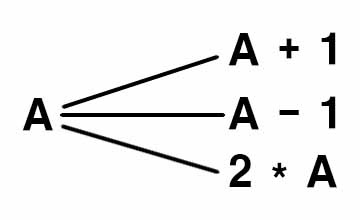
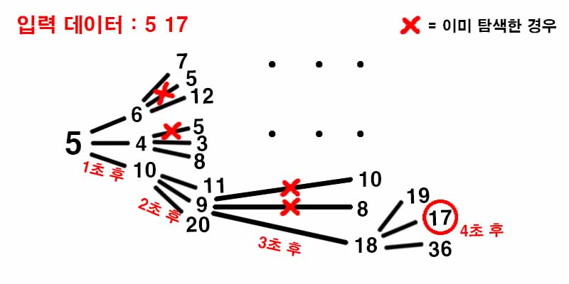

백준 1697. 숨바꼭질
- https://www.acmicpc.net/problem/1697
-
문제 :
수빈이는 동생과 숨바꼭질을 하고 있다. 수빈이는 현재 점 N(0 ≤ N ≤ 100,000)에 있고, 동생은 점 K(0 ≤ K ≤ 100,000)에 있다. 수빈이는 걷거나 순간이동을 할 수 있다. 만약, 수빈이의 위치가 X일 때 걷는다면 1초 후에 X-1 또는 X+1로 이동하게 된다. 순간이동을 하는 경우에는 1초 후에 2*X의 위치로 이동하게 된다.
수빈이와 동생의 위치가 주어졌을 때, 수빈이가 동생을 찾을 수 있는 가장 빠른 시간이 몇 초 후인지 구하는 프로그램을 작성하시오. -
입력 :
첫 번째 줄에 수빈이가 있는 위치 N과 동생이 있는 위치 K가 주어진다. N과 K는 정수이다. -
출력 :
수빈이가 동생을 찾는 가장 빠른 시간을 출력한다. -
풀이 :
정점과 간선이 입력 데이터로 주어지지 않지만 조건을 통해 직접 정점과 간선을 만들어가면서 답을 찾는 문제이다.
조건을 기준으로 현재 정점이 A일 경우 A는 A + 1, A - 1, 2 * A 라는 정점에 간선이 연결된다.

BFS가 이 문제에서 원하는 동생을 찾는 가장 빠른 시간을 찾는 데 더 적합하다고 생각해 BFS를 사용했다.

탐색 중 K에 해당하는 값이 나올 경우 N에서 K까지 걸린 시간을 출력한다.